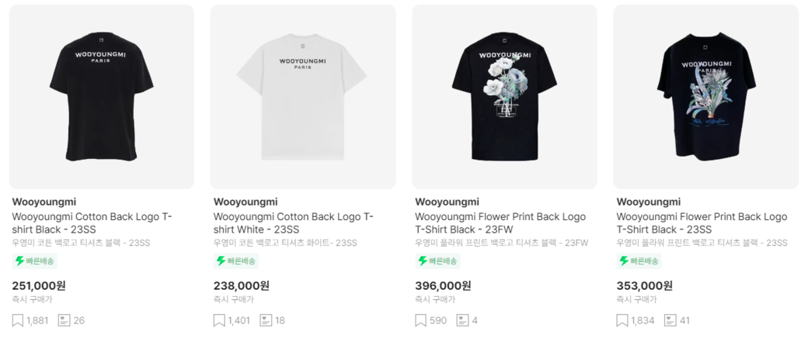

WOOYOUNGMI
우영미의 컬렉션은 균형 잡힌 실루엣, 선명한 색상 선택, 독특한 패턴 및 형태의 사용으로 유명하다. 브랜드는 모던하면서도 유니크한 디자인으로 인기를 얻고 있으며, 남성복의 전통적인 경계를 넘어선 현대적이고 창의적인 스타일을 제시한다.
위에 사진은 우영미 반팔티이다. 로고와 백프린팅이 포인트이다.
우영미의 컬렉션은 균형 잡힌 실루엣, 선명한 색상 선택, 독특한 패턴 및 형태의 사용으로 유명하다. 브랜드는 모던하면서도 유니크한 디자인으로 인기를 얻고 있으며, 남성복의 전통적인 경계를 넘어선 현대적이고 창의적인 스타일을 제시한다.
위에 사진은 우영미 반팔티이다. 로고와 백프린팅이 포인트이다.